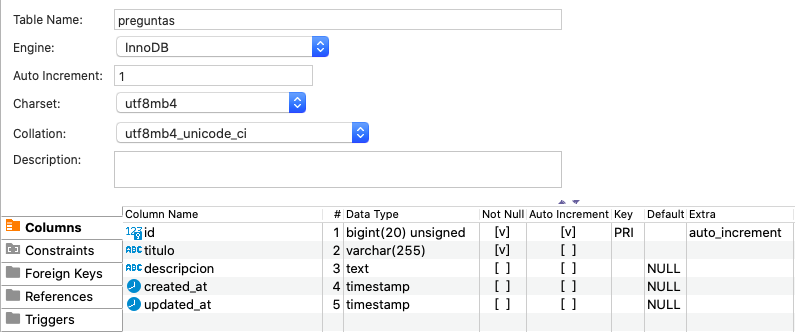

Frameworks PHP. Laravel¶
Duración estimada: 40 sesiones
Frameworks¶
Puesta en marcha¶
Los requisitos para poner en marcha Laravel son tener instalados los comandos php y composer.
Para crear el proyecto:
composer create-project laravel/laravel --prefer-dist NombreProyecto
Una vez creado el proyecto Laravel, es conveniente situarse en el raíz del mismo y ejecutar
composer update
php artisan key:generate
Configuración¶
En el directorio raiz del proyecto tenemos el archivo .env. Este archivo define las variables de entorno que personalizan nuestro entorno. Así pues, es aquí donde deberemos configurar nuestra base de datos.
DB_HOST=localhost
DB_DATABASE=severorespuestas
DB_USERNAME=severo
DB_PASSWORD=ochoa
Migraciones¶
https://richos.gitbooks.io/laravel-5/content/capitulos/chapter6.html
A la hora de definir nuestra base de datos, el primer paso suele ser su diseño tanto conceptual, como lógico y físico, haciendo uso de algúna herramienta gráfica tipo MySQL Workbench para la posterior generación del código SQL con la estructura de las tablas y sus relaciones.
Las migraciones (https://laravel.com/docs/master/migrations) permiten a Laravel definir la estructura de la base de datos de manera programática, esto es, mediante PHP en vez de SQL.
Además de desacoplar el sistema gestor de base de datos de nuestra aplicación mediante el uso de la fachada Schema, las migraciones evitan errores de sintaxis y mantienen los entornos de producción, preproducción, pruebas y entorno local con la misma información.
Todo proyecto Laravel viene con tres migraciones por defecto, las cuales podemos modificar o eliminar.
Creación¶
Para crear una migración podemos crear directamente nuestras clases en la ruta database/migrations/ de nuestro proyecto Laravel, o utilizar los comandos de artisan.
Para crear nuestras migraciones en Laravel se usa el siguiente comando:
php artisan make:migration nombreMigracion
que nos crea la clase vacía para escribir nuestra migración, o bien el comando:
php artisan make:migration nombreMigracion --create=nombreTabla
Esta clase que acabamos de crear hereda de Illuminate\Database\Migrations\Migration. El método que se encarga de generar la migración es up(), y dentro de él, mediante la clase Schema indicaremos la estructura de la tabla junto con sus atributos y dominios. Para deshacer las migraciones rescribiremos el método down().
Por ejemplo, vamos a crear la tabla preguntas de nuestra aplicación.
Tablas en plural
Ya lo comentamos en la unidad anterior. Laravel se basa en la convención sobre la configuración. Por ello, las tablas se nombran en plural.
Para ello, primero crearemos la migración mediante la consola:
php artisan make:migration createPreguntasTable
<?php
use Illuminate\Database\Migrations\Migration;
use Illuminate\Database\Schema\Blueprint;
use Illuminate\Support\Facades\Schema;
class CreatePreguntasTable extends Migration
{
/**
* Ejecuta las migraciones.
*
* @return void
*/
public function up()
{
Schema::create('preguntas', function(Blueprint $table) {
$table->id();
$table->string('titulo');
$table->text('descripcion')->nullable();
$table->timestamps();
});
}
/**
* Deshace las migraciones.
*
* @return void
*/
public function down()
{
Schema::dropIfExists('preguntas');
}
}
Si nos fijamos en el método up(), mediante Schema::create('nombreTabla', funcionBlueprint) le indicamos los campos, con sus tipos de datos y restricciones.
Podéis consultar todos los tipos disponibles en https://laravel.com/docs/master/migrations#available-column-types. Los tipos más utilizados son:
id: crea un campo autoincrementable y le asigna la clave primaria. No recibe ningún parámetro.integer: crea un campo de tipo enterodecimal: crea un campo de tipo decimal, al que se le indican tanto la precisión como las escala (dígitos decimales)table->decimal('amount', $precision = 8, $scale = 2);string: crea una campo de tipo cadenatext: crea un campo de tipo textotimestamp: crea las columnascreated_atyupdated_at. No recibe ningún parámetro.
Ejecución¶
Así pues, una vez creada la migración, sólo nos queda ejecutarla mediante la opción migrate:
php artisan migrate
Si en algún momento queremos deshacer la última migración, realizaremos un rollback:
php artisan migrate:rollback
Finalmente, si queremos deshacer todos los cambios, realizaremos un reset:
php artisan migrate:reset
Así pues, si ejecutamos nuestras migraciones y nos conectamos a nuestra base de datos, podremos ver cómo se ha creado la tabla preguntas.
$ php artisan migrate
Migrating: 2021_08_06_112804_create_preguntas_table
Migrated: 2021_08_06_112804_create_preguntas_table (97.47ms)
Y si nos conectamos a la base de datos, veremos que realmente ha creado dos tablas: migrations y preguntas. La tabla migrations almacena un historico de las migraciones realizadas y nuestra tabla preguntas tiene la estructura que habíamos definido:

Rutas¶
https://laravel.com/docs/master/routing
Vistas¶
https://laravel.com/docs/master/views
Controladores¶
https://laravel.com/docs/master/controllers
Validaciones¶
https://laravel.com/docs/master/validation
Integración con Eloquent¶
Para integrar nuestras migraciones con los modelos, si el nombre de la tabla coincide, ya estarían conectados.
Modelos en singural
Ya lo comentamos en la unidad anterior. Laravel se basa en la convención sobre la configuración. Por ello, los modelos se nombran en singular, y su tablas asociadas en plural.
Para facilitar el trabajo a la hora de crear los modelos, podemos indicarle que también genere su migración con la opción --migration o -m (la migración se crea desde 0, con lo cual no puede existir una migración previa con dicho nombre):
php artisan make:model nombreModelo --migration
La migración creada tendrá el esqueleto rellenado con los atributos $table->id() y el $table->timestamps().
Controlador recurso¶
Métodos create, show....
Formulario de create Pregunta
Formulario de store Pregunta 1 Validar 2 Guardar en BD 3 Redirect a vista/controller
TODO: Revisar las validaciones de los controladores ... creo que el lugar correcto es aquí al recoger datos
Referencias¶
- Curso de Laravel de www.pildorasinformaticas.es: https://www.pildorasinformaticas.es/course/laravel/
- Libro / Apuntes sobre Laravel 5 en castellano: https://richos.gitbooks.io/laravel-5
- Apuntes Laravel creados por
igomis, docente del IES Batoi de Alcoy(valenciano): https://igomis.github.io/apunts/